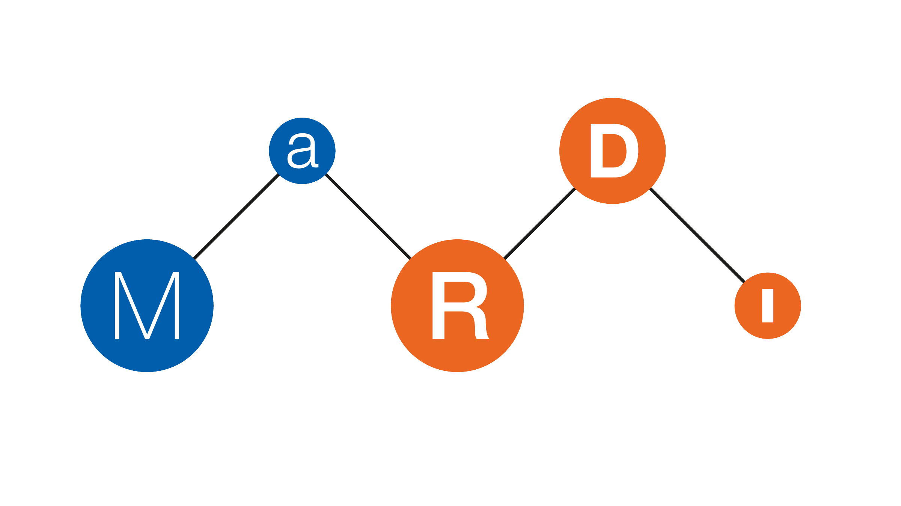

<!DOCTYPE html>
<html lang="en">
  <head>
    <meta charset="utf-8" />
    <meta name="viewport" content="width=device-width, initial-scale=1.0, maximum-scale=1.0, user-scalable=no" />

    <title>Building a Knowledge Graph for Scientific Computing</title>
    <link rel="shortcut icon" href="./favicon.ico" />
    <link rel="stylesheet" href="./dist/reset.css" />
    <link rel="stylesheet" href="./dist/reveal.css" />
    <link rel="stylesheet" href="./dist/theme/black.css" id="theme" />
    <link rel="stylesheet" href="./css/highlight/github.css" />

    <link rel="stylesheet" href="./_assets/slides/template_extra.css" />

    </head>
  <body>
    <div class="reveal">
      <div class="slides"><section  data-markdown><script type="text/template">

# Building a Knowledge Graph for Scientific Computing

<small>René Fritze (rene.fritze@wwu.de)</small>

<small>Applied Mathematics Münster</small>

<small>GAMM Annual Meeting 2022</small>

<small>August 16th, 2022</small>

</script></section><section  data-markdown><script type="text/template">

<div class="container">

<div>

## Get the slides

[https://rene.fritze.me/22-gamm/](https://rene.fritze.me/22-gamm/)

</div>

<div>

</div>
</div>

</script></section><section  data-markdown><script type="text/template">


<div class="container">

<div>

## MaRDI

- Started November 2021

- 1 of 30 NFDI consortia

- 15 Institutions plus partners

- THE math consortium

[mardi4nfdi.de](https://mardi4nfdi.de/)

</div>

<div>

</div>
</div>

</script></section><section  data-markdown><script type="text/template">

<div class="container">

<div>

## MaRDI

- I joined TA2 on January 1st

- We have 1.8 positions in Münster, working on knowledge graph
and open software interfaces

- Partners in Madgeburg complete TA2 with
benchmark framework and workflow standardization

</div>

<div>


</div>
</div>

</script></section><section  data-markdown><script type="text/template">

<div class="container">

<div>

## 1st MaRDI Workshop on Scientific Computing

### 26.10. - 28.10.22 in Münster, Germany

[https://workshop.mardi.ovh/](https://workshop.mardi.ovh/)

</div>

<div>

</div>
</div>
</script></section><section  data-markdown><script type="text/template">

# Motivation

Why do want to build a knowledge graph for scientific computing?

</script></section><section  data-markdown><script type="text/template">


## Meet Bob

- Bob is a *computational engineer*
- His new work involves solving a non-smooth optimization problem.

<div class="footnote">

[Portrait illustration vector created by freepik - www.freepik.com](https://www.freepik.com/vectors/portrait-illustration)

</div>

</script></section><section  data-markdown><script type="text/template">


- He has no expericence with this.
- He wants to find the best algorithm for his specific problem and a software library he can use.
- He does not really know how to get an overview of what his options are.

<div class="footnote">

[Portrait illustration vector created by freepik - www.freepik.com](https://www.freepik.com/vectors/portrait-illustration)

</div>
</script></section><section  data-markdown><script type="text/template">


## Meet Alice

- Alice is an expert in model reduction.
- She wants to follow current research in her field and compare her algorithms to the state of the art of competing methods.

<div class="footnote">

[Portrait illustration vector created by freepik - www.freepik.com](https://www.freepik.com/vectors/portrait-illustration)

</div>
</script></section><section  data-markdown><script type="text/template">


- She's clearly too busy to follow [math.NA](https://arxiv.org/list/math.NA/recent), and not everything is there.
- There is no useable AMS classification. Keywords? But which?

<div class="footnote">

[Portrait illustration vector created by freepik - www.freepik.com](https://www.freepik.com/vectors/portrait-illustration)

</div>
</script></section><section  data-markdown><script type="text/template">

## The underlying problems

No way to directly search/get suggestions for:

- journal articles discussing a specific algorithm
- (benchmark) experiments comparing algorithms for a specific problem
- implementing software

</script></section><section  data-markdown><script type="text/template">

## The underlying problems

No way to directly search/get suggestions for:

- algorithms that solve a certain mathematical problem
- algorithms similar to a given algorithm

</script></section><section  data-markdown><script type="text/template">

## Our goal

Build and maintain a knowledge graph of numerical algorithms
    which interlinks those algorithms with the addressed mathematical problems and associated research
    data such as journal papers, benchmarks or implementing software packages.

</script></section><section  data-markdown><script type="text/template">

## What is a Knowledge Graph

- A way to formally encode relationships between objects
- A set of "subject-predicate-object" statements (triples)

</script></section><section  data-markdown><script type="text/template">

## Examples

[Wikidata](https://www.wikidata.org/wiki/Q108327788)

```bm:HPCG a :benchmark .```

⇕
<small>
```https://mardi4nfdi.de/algodata/0.1/benchmark#HPCG a https://mardi4nfdi.de/algodata/0.1#benchmark .```

</small>

</script></section><section  data-markdown><script type="text/template">

## Where we are

1. First version of an ontology for algorithms
2. Started graphs for numerical linear algebra and model order reduction

</script></section><section  data-markdown><script type="text/template">

<div class="container">

<div>

## Prototype query frontend

[https://algodata.mardi4nfdi.de/](https://algodata.mardi4nfdi.de/)

</div>

<div>

</div>
</div

</script></section><section  data-markdown><script type="text/template">

### The future

## 1. Feedback rounds on the interface

</script></section><section  data-markdown><script type="text/template">

### The future

## 2. First public release of the platform

- repository open to the public
- query frontend accessible for everyone

</script></section><section  data-markdown><script type="text/template">

### The future

## 3. Editorial features

- propose changes through the interface
- establish curation process

Only community driven expansion can make the platform useful!

</script></section><section  data-markdown><script type="text/template">

<div class="container">

<div>

## Get the slides

[https://rene.fritze.me/22-gamm/](https://rene.fritze.me/22-gamm/)

</div>

<div>

</div>
</div>

</script></section><section  data-markdown><script type="text/template">

<div class="container">

<div>

## Prototype query frontend

[https://algodata.mardi4nfdi.de/](https://algodata.mardi4nfdi.de/)

</div>

<div>

</div>
</div
</script></section></div>
    </div>

    <script src="./dist/reveal.js"></script>

    <script src="./plugin/markdown/markdown.js"></script>
    <script src="./plugin/highlight/highlight.js"></script>
    <script src="./plugin/zoom/zoom.js"></script>
    <script src="./plugin/notes/notes.js"></script>
    <script src="./plugin/math/math.js"></script>
    <script>
      function extend() {
        var target = {};
        for (var i = 0; i < arguments.length; i++) {
          var source = arguments[i];
          for (var key in source) {
            if (source.hasOwnProperty(key)) {
              target[key] = source[key];
            }
          }
        }
        return target;
      }

          // default options to init reveal.js
          var defaultOptions = {
            controls: true,
            progress: true,
            history: true,
            center: true,
            transition: 'slide', // none/fade/slide/convex/concave/zoom
            controls: false,
            slideNumber: false,
            plugins: [
              RevealMarkdown,
              RevealHighlight,
              RevealZoom,
              RevealNotes,
              RevealMath
            ]
          };

      // options from URL query string
          var queryOptions = Reveal().getQueryHash() || {};

          var options = extend(defaultOptions, {"transition":"slide","controls":true,"slideNumber":true}, queryOptions);
        </script>

    <script src="./_assets/lib/mermaid.min.js"></script>
    <script src="./_assets/lib/reveal-mermaid.js"></script>

    <script>
      Reveal.initialize(options);
    </script>
  </body>
</html>
